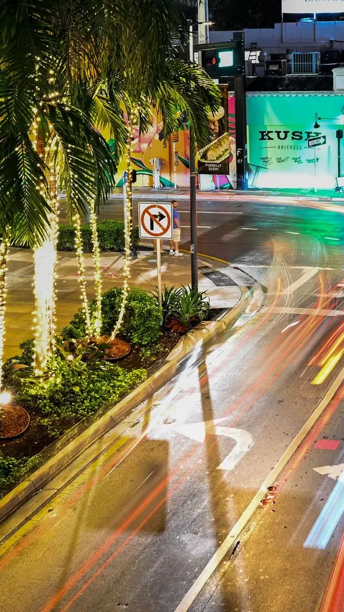
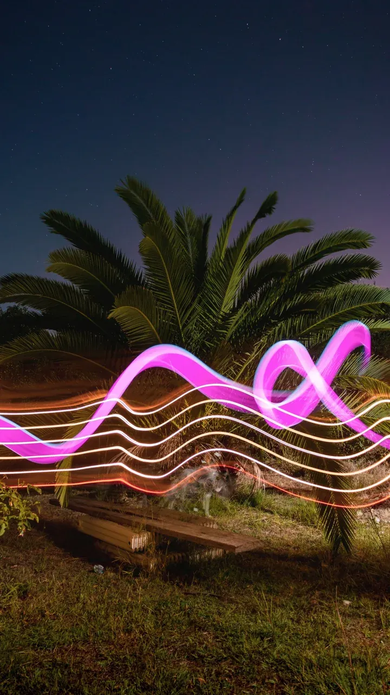
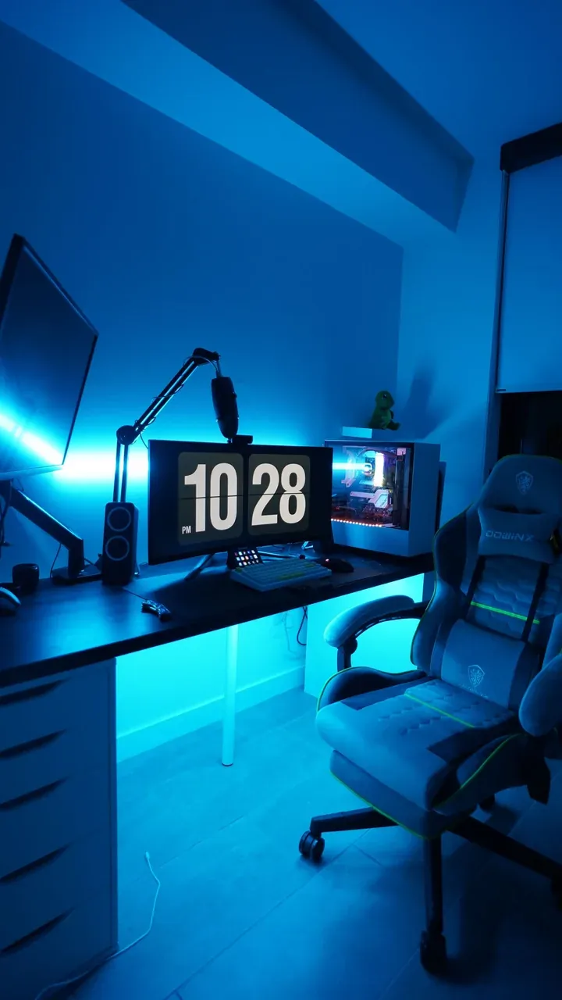
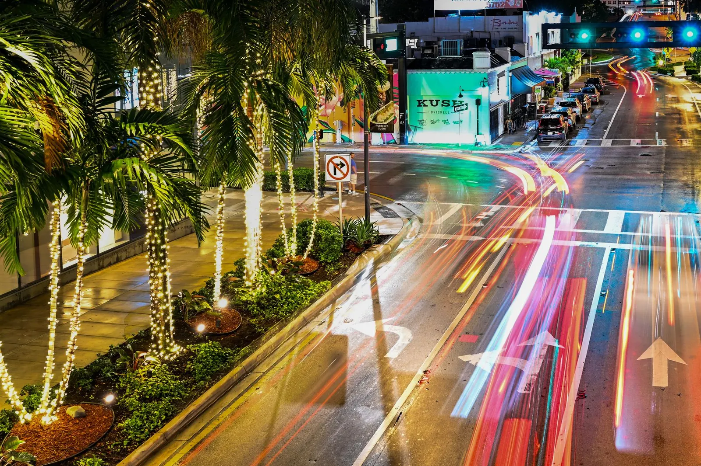
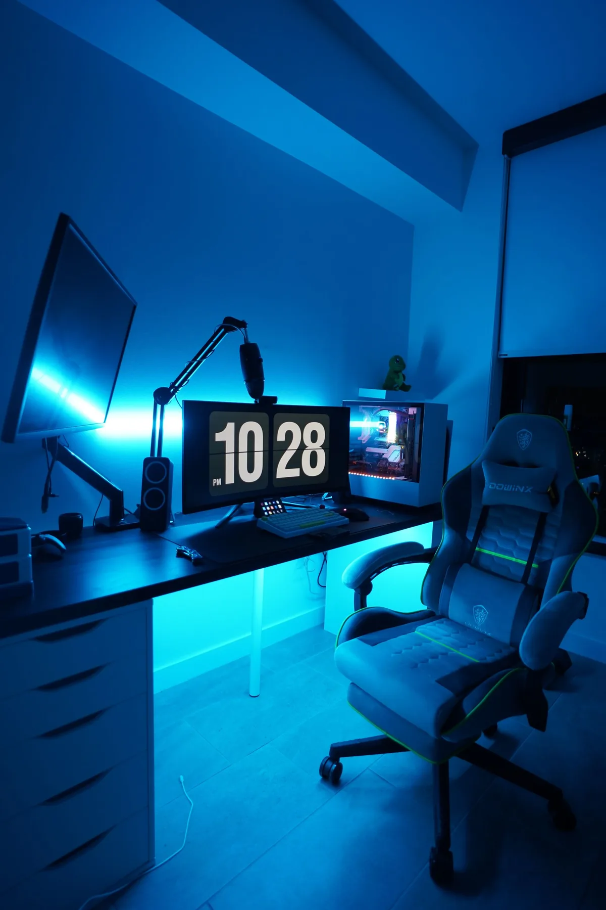

9/10 He did not expect that
New GTA 6 ready · 19 November
Live stream clipper for Twitch, YouTube and Kick
Motion Mania watches the broadcast, catches the moment chat reacts to, and edits a vertical clip with captions and sound. It runs on your computer.
Free planUnlimited clipsmacOS and Windows
One stream. A week of posts.
Vertical, captioned, scored and ready. Every clip is a normal MP4 you can post anywhere.

8/10 Wait for the end
7/10 Chat lost itPaste a link and it watches the room
01 · LIVE LINK
Stream link
Twitch, YouTube or Kick. A channel page, a live URL, a past broadcast or a file on your disk.
02 · CHANNEL BASELINE
Channel baseline
Chat speed and loudness are measured against that channel's own normal, not a fixed number.
03 · CLIP QUEUE
Clip queue
Each moment is cut, cropped to 1080×1920, captioned and edited. Approve it on your phone.
Chat-first detection
Most clippers read a kill feed. That misses the reaction, the rage, the line chat repeats for ten minutes. Motion Mania measures the room instead.
2.5× chat speed
+9dB loudness
4chatters minimum
Works on GTA, story games, IRL and variety, without a game integration.
A template for the look, Pro Edit for the cut
Built-in vertical layouts, word-level captions, music, colour looks and effects. Pro Edit adds the cut: speaker changes, jump cuts, punch captions, motion and a meme ending only when the clip earns it.
- Split, stack, PiP, duo: the facecam stays where it belongs
- Captions on every word: four styles, timed to the audio
- Music on the punchline: tempo and drop analysed per track
- One meme, when it fits: a weak match is dropped
Pro Edit
AI 9/10
No way
he did that
he did that
Approve it from your phone
Motion Mania serves a private web app from your own computer. Scan once, add it to your home screen, and a notification arrives when a clip is ready.
- Approve or reject with one tap
- Change the title or banner before it posts
- Watch instantly: a light copy, not a 30 MB download
- Post to YouTube or TikTok from the same screen
8/10
Wait for the end
RejectApprove
The clip exists while the stream is still live.

GTA 6 · 19 November 2026
Day-one GTA 6 clips can only come from the stream
The launch build is console-only, with no Rockstar Editor. The broadcast is the only source of footage, and Motion Mania is built to clip it while it runs.
Both plans clip without limits
Post without downloading
Approved clips upload to YouTube Shorts or your TikTok inbox. Free exports the MP4 and you post it yourself.
Approve anywhere
The private phone app sends a notification and takes one tap to approve, retitle or reject.
Let the AI choose
Titles, hooks and hashtags written from the clip, plus a quality score that skips the weak moments.
Free
Everything you need to make clips and post them yourself.
$0
- Unlimited clips
- Template Studio and built-in layouts
- Captions, music and effects
- Download 1080×1920 MP4
- Pro Edit
- Phone app
- Auto-upload
Pro
Most popularFor creators posting every day.
$12 / monthor $99 a year, two months free
- Everything in Free
- Pro Edit: speaker cuts, jump cuts, motion, memes, sound design
- Phone app with notifications
- Auto-upload to YouTube Shorts and TikTok
- AI titles and quality check
- Email support
Questions, answered
Which platforms does it work with?
Twitch, YouTube and Kick. Past broadcasts, normal videos and local files work too.
Does it work for GTA 6 streams?
Yes. It does not need a kill feed or a game integration, so it works on GTA, story games, IRL and variety content. GTA 6 launches on 19 November 2026 for PS5 and Xbox Series X|S only.
Does my computer need to stay on?
Yes. Motion Mania records and renders on your own computer, which is why clips are unlimited and your footage never leaves the machine.
Is it a cloud service?
No. Detection, editing and rendering happen locally. The network is used for the stream, optional AI titles and uploading clips you approve.
Can I clip someone else's stream?
You need the right to republish it. Many streamers run clipping programmes; others do not.
Does it post to Instagram or Facebook?
Not yet. Motion Mania uploads to YouTube Shorts and TikTok.


Motion Mania on your desktop
Install it, paste a link, let it watch. Free to start, no credit card.
Works withTwitchYouTubeKick